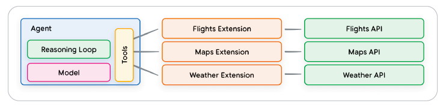

Agents
Introduction
Definition
Agents are Generative AI models that can be trained to use tools to access real-time information or suggest a real-world action.
This combination of reasoning, logic, and access to external information that are all connected to a Generative AI model invokes the concept of an agent, or a program that extends beyond the standalone capabilities of a Generative AI model.
A Generative AI agent can be defined as an application that attempts to achieve a goal by observing the world and acting upon it using the tools that it has at its disposal.
Agents vs. Models

Architecture
Structure
An agent is composed by three main components:
- The Model - It's a LLM that acts as a centralised decision maker, thanks to techniques as ReAct, Chain-of-Thought or Tree-of-Thought
- The Tools - Foundational models remain constrained by their inability to interact with the outside world. Tools bridge this gap (e.g., RAG).
- The Orchestration Layer - The orchestration layer describes a cyclical process that governs how the agent takes in information, performs some internal reasoning, and uses that reasoning to inform its next action or decision. It performs this loop until the end goal is reached.
Process
The sequence of events might go something like this:
- User sends query to the agent
- Agent begins the ReAct sequence
- The agent provides a prompt to the model, asking it to generate one of the next ReAct steps and its corresponding output:
a. Question: The input question from the user query, provided with the prompt
b. Thought: The model’s thoughts about what it should do next c. Action: The model’s decision on what action to take next
c. Action: The model's decision on what action to take next
i. This is where tool choice can occur
ii. For example, an action could be one of [Flights, Search, Code, None], where the first
3 represent a known tool that the model can choose, and the last represents “no
tool choice”
d. Action Input: The model's decision on what inputs to provide to the tool (if any)
e. Observation: The result of the action / action input sequence
i. This though / action / action input / observation could repeat N-times as needed
f. Final Answer: The model's final answer to provide to the original user query 4. The ReAct loop concludes and a final answer is provided back ot the user
Tools
Introduction
While language models excel at processing information, they lack the ability to directly perceive and influence the real world.
So how can we empower our models to have real-time, context-aware interaction with external systems? Functions, Extensions, Data Stores and Plugins are all ways to provide this critical capability to the model.
There are three main primary tools:
- Extensions
- Functions
- Data Stores
Extensions
Extensions allow agents to seamlessly execute APIs regardless of their underlying implementation. Let’s say that you’ve built an agent with a goal of helping users book flights. You know that you want to use the Google Flights API to retrieve flight information, but you’re not sure how you’re going to get your agent to make calls to this API endpoint.
One approach could be to implement custom code. This approach is not scalable and could easily break in any scenario that falls outside the implemented custom code.
A more resilient approach would be to use an Extension. An Extension bridges the gap between an agent and an API by:
- Teaching the agent how to use the API endpoint using examples.
- Teaching the agent what arguments or parameters are needed to successfully call the API endpoint.

An agent can learn how to use an extension through an OpenAPI Specification or a manifest file. These explain in a machine-readable way how to use the extension.
import vertexai
import pprint
from vertexai.preview.extensions import Extension
PROJECT_ID = "YOUR_PROJECT_ID"
REGION = "us-central1"
vertexai.init(project=PROJECT_ID, location=REGION)
extension_code_interpreter = Extension.from_hub("code_interpreter")
CODE_QUERY = """Write a python method to invert a binary tree in O(n) time."""
response = extension_code_interpreter.execute(
operation_id = "generate_and_execute",
operation_params = {"query": CODE_QUERY}
)
print("Generated Code:")
pprint.pprint({response['generated_code']})
Functions
In the world of software engineering, functions are defined as self-contained modules of code that accomplish a specific task and can be reused as needed.
Functions differ from Extensions in a few ways, most notably:
- A model outputs a Function and its arguments, but doesn’t make a live API call.
- Functions are executed on the client-side, while Extensions are executed on the agent-side.
The logic and execution of calling the actual API endpoint is offloaded away from the agent and back to the client-side. This offers the developer more granular control over the flow.
Common use cases:
- API calls need to be made at another layer of the application stack
- Security or authentication restrictions that prevent the agent from calling an API directly
- Additional data transformation logic needs to be applied to the API Response that the agent cannot perform.

Data Stores
Data Stores address this limitation by providing access to more dynamic and up-to-date information, and ensuring a model’s responses remain grounded in factuality and relevance.
In the context of Generative AI agents, Data Stores are typically implemented as a vector database that the developer wants the agent to have access to at runtime.

Neural Turing Machine
Definition
Coupling an ANN with an external memory in order to retrieve information through attention mechanism.
Attention Mechanisms
- Content-based Addressing → Softmax of key-vector "k" and memory storage
- Location-based Addressing → 1-D Convolution between key-vector and memory storage